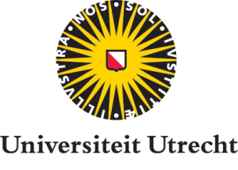
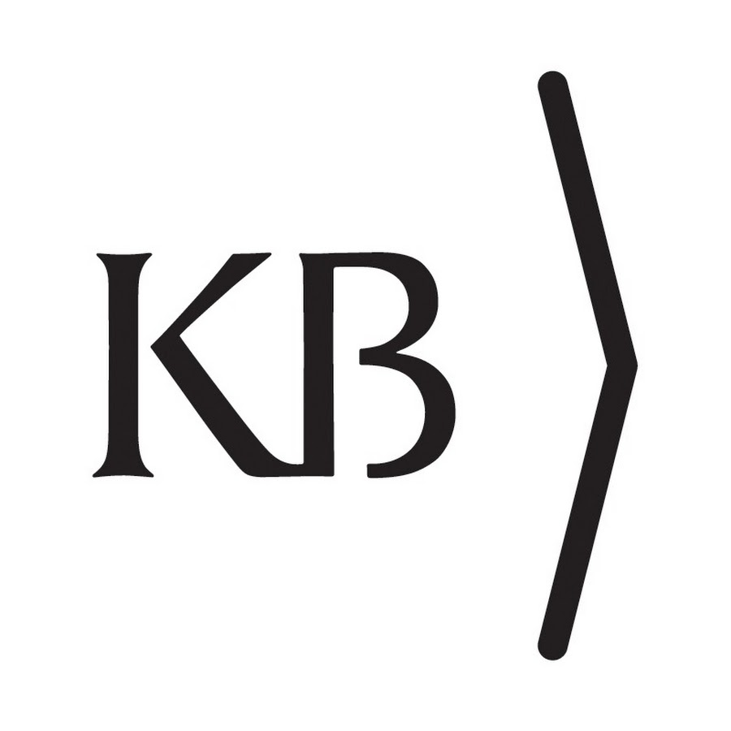

About the Project
This project, funded by the NL eScience Center, uses state-of-the-art machine learning techniques to study conceptual change over time. It builds on the seminal BERT infrastructure that has in recent years caused a breakthrough in the computational understanding of language. In this project, we will re-train the base model to create multiple, chronologically ordered models based on historical Dutch textual data. With the help of the Dutch National Library’s massive archive of historical newspapers, magazines, and books, this project will, thus, show how Dutch words have changed their meaning and connotation in public discourses from the Second World War until the present day.
By doing so, this project aims to study the conceptual history of one of the most urgent issues of today: global sustainability. With the help of this technique, we are able to trace continuities and breaks in this discourse to, ultimately, gain insights into the forces at play when it comes to sustainability.
Our Collaborators
Utrecht University
eScience Center
National Library The Hague
